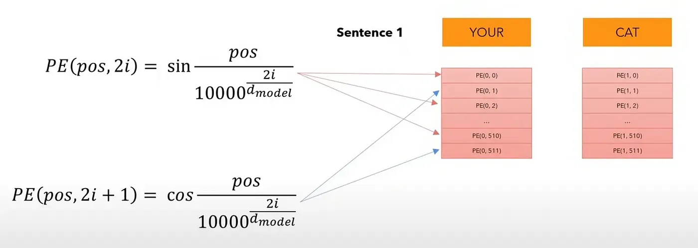

Transformers From Scratch - Theory
RNN Understanding
Recurrent Neural Network (RNN) is a type of neural network designed to handle sequential data. Unlike traditional feedforward neural networks, RNNs have connections that form cycles, allowing information to be passed from one step of the sequence to the next. This structure enables RNNs to maintain a memory of previous inputs, making them suitable for tasks where context over time is important (like time-series forecasting, language modeling, etc.).
Basic Mechanism:
- Inputs: At each time step ( t ), an RNN receives an input vector $ (x_t) $.
- Hidden State: The hidden state $ (h_t) $ is updated at each time step based on the current input $ (x_t) $ and the previous hidden state $ (h_{t-1}) $.
- Output: The RNN generates an output at each time step, or a final output after processing the entire sequence.
Mathematical Formulation:
Hidden State:
\[ h_t = \text{activation}(W_h \cdot h_{t-1} + W_x \cdot x_t) \]Output:
\[ y_t = W_y \cdot h_t \]
Inputs and Outputs
Inputs: RNNs take in a sequence of data. The input at each time step $ (x_t) $ can be a vector, representing things like a word in a sentence, a stock price in a time series, or a feature in a sequence of data.
Outputs:
- For sequence-to-sequence tasks (e.g., machine translation), RNNs produce a sequence of outputs.
- For many-to-one tasks (e.g., sentiment analysis), RNNs output a single value after processing the entire sequence.
Advantages of RNNs
Sequence Handling: RNNs are designed to handle sequential data, making them ideal for tasks like speech recognition, time-series forecasting, and natural language processing.
Context Retention: The hidden state allows RNNs to retain memory of previous inputs, enabling them to learn dependencies over time.
Flexible Input/Output Lengths: RNNs can process sequences of varying lengths, which is useful in many NLP and time-series tasks.
Parameter Sharing: The weights in an RNN are shared across all time steps, making the model more efficient in terms of size compared to fully connected networks.
Limitations of RNNs
Vanishing Gradient Problem: During backpropagation, gradients can become very small, making it difficult to learn long-term dependencies. This limits the effectiveness of RNNs on long sequences.
Exploding Gradient Problem: On the other hand, gradients can also grow excessively large, causing unstable training.
Difficulty with Long-Term Dependencies: RNNs struggle to learn and retain information over long sequences due to the vanishing gradient problem.
Slow Training: Training RNNs is computationally expensive and slow, as each time step depends on the previous one, making them hard to parallelize.
Limited Parallelism: Since RNNs process data sequentially, it’s challenging to parallelize computations effectively, which can hinder scalability.
Attention
What is Attention?
Attention is a mechanism used in deep learning models, particularly in natural language processing (NLP) and computer vision, that allows the model to focus on specific parts of the input sequence when making predictions. Instead of processing the entire input equally, the attention mechanism helps the model determine which parts of the input are most important at each step.
The idea behind attention is inspired by how humans process information: when we read a sentence or observe an image, we don’t give equal attention to every word or pixel. Instead, we focus on specific parts that are most relevant for understanding or making decisions. Attention in neural networks mimics this behavior by assigning different weights (or importance) to different elements in the input, based on the task at hand.
Need for Attention
Capturing Long-Term Dependencies:
Attention helps overcome the limitations of traditional RNNs and LSTMs by allowing models to focus on relevant parts of the input, even from distant positions in the sequence. This enables better learning of long-term dependencies in tasks like machine translation or text generation.Improved Performance in Complex Tasks:
Attention improves model performance by enabling the focus on important parts of the input sequence, which is particularly useful for tasks such as machine translation, text summarization, and image captioning.Parallelization:
Attention mechanisms, especially in architectures like Transformers, enable parallel processing of input sequences. This significantly speeds up training and inference compared to sequential models like RNNs, leading to more scalable solutions.Interpretability:
Attention mechanisms provide insight into how the model makes predictions by highlighting the parts of the input it focuses on, which improves the interpretability of decisions, especially in complex tasks like machine translation.Handling Variable-Length Sequences:
Attention can efficiently handle input sequences of varying lengths by dynamically weighing the importance of different parts of the sequence, making it ideal for tasks with unpredictable input sizes, such as NLP.Flexibility Across Modalities:
Attention is versatile and can be applied to different data modalities, such as text, images, and videos. In tasks like image captioning, attention helps focus on specific objects or regions in the image, improving the quality of generated descriptions.
Transformer Architecture
Overview
This is the basic transformer architecture
It contains 2 macro-blocks:
- Encoder
- Decoder
- and a linear layer
Now we will focus each and every part of this architecture in detail to getter better understanding of this architecture
Encoder

These below are the different components of encoder * Input Embedding * Positional Encoding * Multi Head Attention * Layer Normalization * Feed Forward & Add and Norm
Input Embeddings
Input embeddings are a way to convert raw data (like words, sentences, or other types of input) into numerical representations that machine learning models can understand. They map each item in the input (e.g., a word) to a vector of numbers, capturing semantic meaning or relationships based on patterns learned from large datasets. For example, in natural language processing (NLP), words with similar meanings have similar embeddings, allowing the model to recognize context and relationships between them.
- Tokenization: The first step in processing the sentence is tokenization. This involves breaking down the sentence into smaller pieces called tokens (which could be words, subwords, or characters, depending on the tokenizer). In this case, let’s assume that the tokenizer assigns unique integer IDs to each word.
Example of tokenization:
“Your” → Token ID 105 “cat” → Token ID 6587 “is” → Token ID 5475 “a” → Token ID 3578 “lovely” → Token ID 65 “cat” → Token ID 6587 (again)
So, the sentence “Your cat is a lovely cat” might be tokenized into the following sequence of token IDs: [105, 6587, 5475, 342, 1234, 6587]
- Embedding Layer: After tokenization, each token ID is mapped to a vector of real numbers in the embedding space. These vectors are high-dimensional representations that capture semantic properties of the tokens. In modern models like GPT, BERT, or similar, each token is represented as a vector with hundreds or thousands of dimensions.
For example, let’s assume the embedding space is 512 dimensions in the above example. Each token ID from the sequence will be transformed into a 512-dimensional vector.
Positional Encoding:
Positional encoding is a technique used in Transformer models to inject information about the order of tokens in a sequence. Unlike traditional models (like RNNs), Transformers process all tokens in parallel, which means they don’t inherently understand the order of words in a sentence.
To address this, positional encodings are added to the token embeddings to provide the model with information about the relative or absolute positions of words in the sequence. These encodings are vectors that are added to the word embeddings, and they typically use sinusoidal functions or learned embeddings.
Need in Transformer Architecture:
Order Awareness: Since Transformers process tokens simultaneously, they need a way to differentiate between, say, “cat chased dog” and “dog chased cat.” Positional encoding tells the model which token is first, second, etc.
Contextual Understanding: By incorporating position information, the model can learn the relationships between tokens that depend on their position in the sentence, which is crucial for tasks like translation, summarization, and question answering.
We add a position embedding vector of size 512 to our original embedding. The values in the position encoding vector are calculated only once and reused for every sentence during training and inference.
The sum of the embedding and position embedding gives us the encoder input. For the same word, the vector embedding is the same but the position embedding is different.
Encoder input = Embedding + Position Embedding
How are position embeddings calculated?

For even positions in the position embedding (count starts from 0), we use the 1st formula, and for odd positions in the position embeddings, we use the 2nd formula. We do this for each of the 512 (d model) values of a position embedding, for each word/token in the sentence.
So, the position embedding for every position in the sentence is the same, regardless of the sentence. It is the encoder input (sum of embedding and position embedding) that is unique. Therefore, we need to compute the positional encodings only once and then we can reuse them during training & inference.
Why are trigonometric functions used here?
Trigonometric functions like sin and cos naturally represent a pattern that the model can recognize as continuous. So, it is easier for the model to see the relative positions of a word when using trigonometric functions.